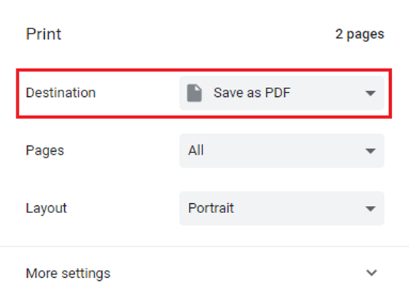

Busca en nuestra documentación, explora nuestros recursos y visita nuestro Foro de la Comunidad para obtener información más detallada
Última actualización: 6 de mayo de 2026
Los formularios web de KoboToolbox te permiten recolectar datos directamente en un navegador web, sin necesidad de instalar una aplicación. Son versiones de tu formulario que funcionan en el navegador y que puedes usar para previsualizar y probar tu cuestionario, o para recolectar datos reales en teléfonos, tabletas y computadoras.
Los formularios web funcionan en la mayoría de los dispositivos modernos, incluidos dispositivos Android, iPhones, iPads, laptops y computadoras de escritorio. Son especialmente útiles en proyectos donde los encuestados completan un formulario a través de un enlace compartido, donde el equipo de recolección de datos usa diferentes tipos de dispositivos, o donde se desea ingresar datos en una computadora en lugar de hacerlo a través de una aplicación.
Los formularios web también admiten recolección de datos sin conexión una vez que el formulario se ha abierto y almacenado en caché en el navegador. Son compatibles con toda la lógica de formulario configurada en KoboToolbox, incluidas la lógica de omisión y las reglas de validación, y su apariencia puede personalizarse mediante diferentes temas de formulario web.
Nota: Los formularios web de KoboToolbox funcionaban anteriormente con Enketo, razón por la cual en documentación anterior se los denominaba formularios web Enketo.
Este artículo cubre los siguientes temas:
Compartir formularios web de KoboToolbox para la recolección de datos
Elegir el modo de formulario web adecuado
Recolectar datos y guardar borradores en el navegador
Usar formularios web sin conexión
Personalizar los enlaces de formularios web para casos de uso específicos
Solución de problemas comunes
Una vez que tu proyecto esté listo para la recolección de datos, puedes compartir fácilmente un enlace con los encuestados o los recolectores de datos para que ingresen información.
Para compartir un enlace con los encuestados:
Abre la página FORMULARIO y asegúrate de que tu formulario haya sido implementado.
En la sección Recolectar datos, haz clic en COPIAR para copiar el enlace y compartirlo con los recolectores de datos o los encuestados.
También puedes hacer clic en ABRIR para abrir el formulario en una nueva pestaña del navegador.

De forma predeterminada, los proyectos implementados requieren que los usuarios inicien sesión antes de poder abrir un formulario web o enviar datos.
Para mantener la autenticación requerida, comparte el proyecto con usuarios específicos de KoboToolbox y otórgales el permiso Añadir envíos.
Para permitir que cualquier persona con el enlace envíe datos sin nombre de usuario ni contraseña, puedes desactivar el requisito de autenticación en la sección Recolectar datos activando la opción «Permitir envíos a este formulario sin nombre de usuario ni contraseña».
Para obtener más información sobre los permisos para compartir formularios, consulta Compartir proyectos con configuraciones a nivel de proyecto y Compartir proyectos con permisos a nivel de usuario/a.
KoboToolbox ofrece varias opciones de enlace de formulario web en la sección Recolectar datos. Estas opciones afectan el enlace que abres o compartes, pero no modifican el formulario en sí.

Los modos de formulario web disponibles son:
Modo de recolección de datos |
Descripción |
|---|---|
En línea-Sin conexión (múltiples envíos) |
Permite la recolección de datos en línea o sin conexión y admite múltiples envíos desde el mismo dispositivo. |
Solo en línea (múltiples envíos) |
Admite múltiples envíos desde el mismo dispositivo, pero requiere conexión a internet para funcionar. |
Solo en línea (único envío) |
Permite un envío a la vez desde el mismo dispositivo y puede usarse con un enlace de redirección después del envío. No se impide que los usuarios vuelvan a abrir el enlace para enviar datos nuevamente. |
Solo en línea (uno por encuestado) |
Impide que el mismo usuario en el mismo navegador y dispositivo envíe más de una vez. |
Código de formulario web integrable |
Proporciona código HTML para insertar el formulario en tu propio sitio web. |
Solo lectura |
Abre el formulario para previsualización y pruebas sin permitir envíos. |
También puedes imprimir un formulario web para compartirlo durante el desarrollo del formulario o usarlo para la recolección de datos en papel. Para hacerlo:
Abre tu formulario web.
Haz clic en el botón de impresora en la esquina superior derecha.
La versión impresa incluye todas las preguntas y sugerencias adicionales, independientemente de la lógica del formulario.

Después de abrir el formulario, los usuarios pueden completarlo directamente en su navegador. Si el formulario incluye varios idiomas, los usuarios pueden cambiar el idioma en la parte superior del formulario.

Al final del formulario, los usuarios pueden guardar su trabajo como borrador o enviarlo:
Enviar finaliza el envío y lo envía al servidor cuando hay conexión disponible. Una vez enviado, el registro ya no puede editarse en el navegador.
Guardar borrador almacena el envío en el dispositivo para que pueda reabrirse y completarse más tarde.

Guardar un borrador almacena el envío en el navegador para que pueda reabrirse y completarse más tarde. Los borradores no se envían al servidor de KoboToolbox hasta que se reabren, finalizan y envían.
Cuando guardas un formulario como borrador, se te pedirá que le asignes un nombre para que sea más fácil encontrarlo después.
El contador de cola en la esquina superior izquierda muestra cuántos borradores están guardados en el navegador. Para reabrir un borrador:
Haz clic en el contador de cola para abrir la lista de borradores guardados.
Selecciona el borrador que deseas abrir.
Revisa o edita el borrador y luego envíalo.

Nota: Los borradores se almacenan en el navegador hasta que se envían, incluso si cierras el navegador, apagas el dispositivo o te quedas sin conexión. No borres la caché del navegador ni los datos del sitio durante la recolección de datos, y asegúrate de que el dispositivo no esté configurado para borrarlos automáticamente, ya que esto podría eliminar permanentemente los borradores guardados.
Los formularios web admiten la recolección de datos sin conexión en todos los navegadores y dispositivos de uso generalizado. Al usar formularios web, KoboToolbox puede almacenar el formulario y las respuestas en el navegador para que los usuarios puedan continuar ingresando datos sin conexión a internet.
Nota: Al ingresar datos sin conexión, no borres la caché del navegador ni los datos del sitio durante la recolección de datos, y asegúrate de que el dispositivo no esté configurado para borrarlos automáticamente, ya que esto podría eliminar permanentemente los formularios sin conexión y los envíos en cola.
Para recolectar datos sin conexión con formularios web:
Antes de desconectarte, abre el formulario con conexión y espera a que se cargue completamente y se almacene en caché en el dispositivo. Esto puede tardar hasta 30 segundos.
Una vez que el formulario se haya almacenado en caché, aparece un ícono de confirmación en la esquina superior izquierda para indicar que ya puede usarse sin conexión.
Si te desconectas antes de que el formulario se haya almacenado en caché, es posible que pierdas acceso a la página cuando se actualice.

Al enviar datos sin conexión, los envíos se agregan a la cola. El contador de cola muestra cuántos registros están esperando para cargarse.
Haz clic en el contador de cola para ver los envíos finalizados que esperan cargarse cuando haya conexión a internet disponible. También puedes exportar los envíos en cola como un archivo ZIP.
Una vez que el dispositivo se vuelva a conectar, los envíos guardados se cargan automáticamente en segundo plano mientras el formulario permanece abierto.
Nota: Para facilitar el acceso durante la recolección de datos sin conexión, puede ser útil marcar el formulario como favorito o agregar un acceso directo a la pantalla de inicio de tu teléfono usando la opción Agregar a la pantalla de inicio del menú del navegador.
Puedes modificar un enlace de formulario web para controlar cómo se abre o se comporta el formulario para diferentes usuarios y casos de uso. Por ejemplo, puedes abrir el formulario en un idioma específico, rellenar previamente ciertos valores o redirigir a los usuarios a otra página después de que envíen el formulario.
Si tu formulario tiene varios idiomas, puedes agregar un parámetro de idioma a la URL del formulario web para que se abra en un idioma específico. Esto puede ser útil cuando se comparten diferentes enlaces con diferentes grupos de usuarios.
Para compartir un enlace que abra el formulario en un idioma diferente al idioma predeterminado del formulario:
Copia el enlace de tu formulario en FORMULARIO > Recolectar datos.
Agrega ?lang=código_de_idioma al final de la URL, donde código_de_idioma es el código del idioma seleccionado.
Por ejemplo: https://ee.kobotoolbox.org/x/[form_id]?lang=fr.
Para obtener más información, consulta Recolectar datos en diferentes idiomas.
También puedes rellenar previamente un campo de tu formulario a través del enlace web. Esto es útil cuando deseas pasar un valor conocido al formulario de forma automática.
Por ejemplo, podrías compartir diferentes enlaces en diferentes lugares, y cada enlace podría abrir el mismo formulario con un campo oculto que indique de dónde proviene el enlace. También podrías compartir un enlace diferente con cada encuestado, con el ID único de esa persona ya incluido en el enlace.
Para compartir un enlace que rellene previamente un campo de tu formulario:
Agrega la pregunta que deseas rellenar previamente a tu formulario y luego configura su nombre de columna de datos.
Puede ser una pregunta de tipo Oculto si deseas almacenar el valor en segundo plano, o cualquier tipo de pregunta estándar si deseas que los encuestados lo vean en el formulario.
Copia el enlace de tu formulario en FORMULARIO > Recolectar datos.
Agrega ?d[nombre_de_columna_de_datos]=valor al final de la URL, donde nombre_de_columna_de_datos es el nombre de columna de datos de la pregunta Oculta y valor es el valor rellenado previamente.
Por ejemplo: https://ee.kobotoolbox.org/x/[form_id]?d[prefilled_field]=12345.
Nota:
Usa el nombre completo de la columna de datos en el parámetro de la URL. Si la pregunta está dentro de uno o más grupos, el nombre debe incluir también el nombre del grupo o los nombres de los grupos (por ejemplo, group1/question1). Puedes encontrar el nombre exacto en el campo Nombre de columna de datos de la pregunta en el Formbuilder, o en la columna name de un XLSForm.
Al usar el modo de recolección de datos Solo en línea (único envío), puedes redirigir a los usuarios a otra página web después de que envíen su formulario.
Para redirigir a los usuarios a otra página web:
En FORMULARIO > Recolectar datos, selecciona el modo de recolección de datos Solo en línea (único envío).
Copia el enlace de tu formulario.
Agrega ?return_url=página_web al final de la URL, donde página_web es la URL de la página web.
Por ejemplo: https://ee.kobotoolbox.org/x/[form_id]?return_url=https://website.com.
Nota:
Puedes combinar varios parámetros en el mismo enlace separándolos con &.
Para solucionar el problema, cambia el nombre de la pregunta afectada por un valor diferente y luego vuelve a implementar el formulario. Este problema suele afectar a los formularios web incluso cuando el formulario se abre con normalidad, mientras que KoboCollect puede seguir funcionando correctamente. Ten en cuenta que los envíos ya guardados con la versión anterior del formulario pueden quedar sin posibilidad de enviarse, por lo que es importante actualizar el formulario lo antes posible si estás recolectando datos a través de formularios web. Siempre prueba el envío del formulario antes de iniciar la recolección de datos para detectar problemas de nomenclatura a tiempo.
¿Encontraste lo que buscabas? ¿Te ha parecido clara la traducción? ¿Faltaba algo?
¡Comparte tus comentarios para ayudarnos a mejorar este artículo!